Design
Collapsible panel where users can turn off context and reset chats while offering another place to import suggested files.
UX Designer,
UX Researcher
Figma, Miro
2 Designers,
2 Product Managers
User Research
User Interviews
Affinity Diagrams
Sketch
Prototypes
3 Months
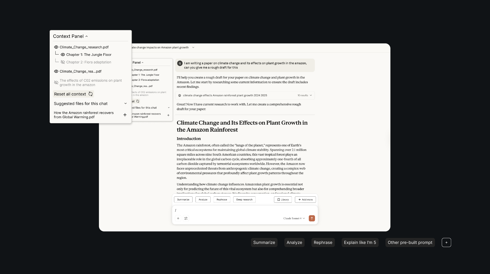
With the rise of easily accessible AI tools, users are required to adopt entirely new interaction patterns, which create usability challenges that don’t exist with deterministic software.
We introduce several features to help users effectively add context into AI tools, while providing opportunities that help users control the context it uses in its outputs.
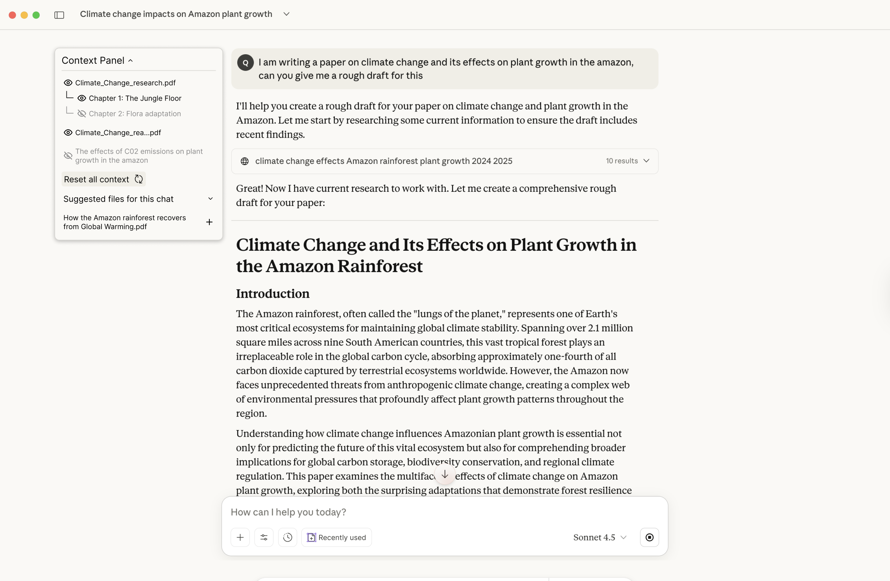
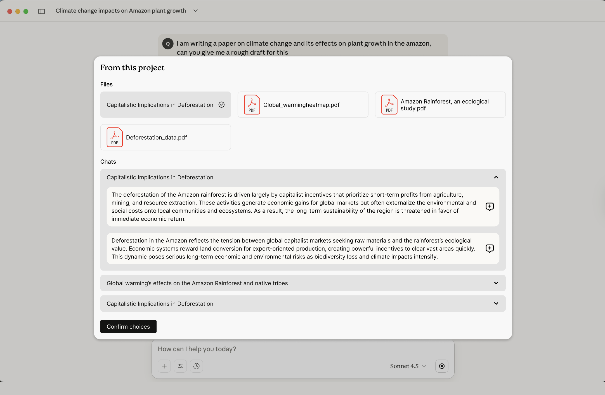
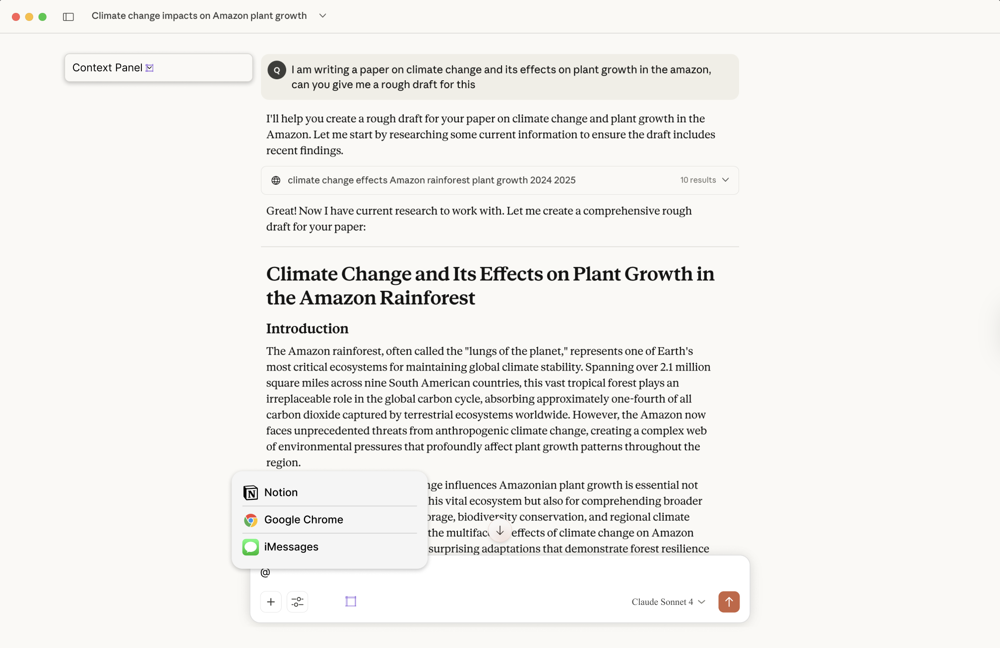
Our first step to unpack this was to dive into research. It can be easy to let our experiences with AI tools drive our design direction, but we wanted to understand how the general user shares context with AI through strategies and mental models and learn how AI tools currently handle context sharing.
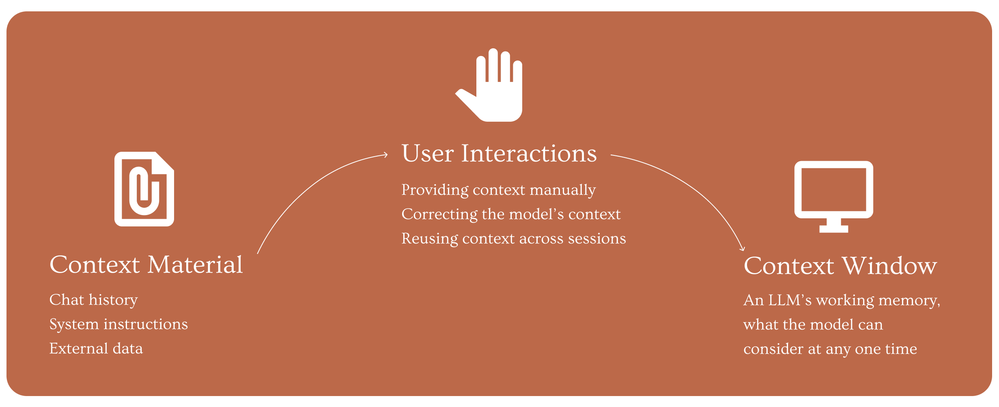
We validated these frustrations with eight participants who highlighted issues with managing and controlling model outputs through chat-based sharing, and found three main insights.
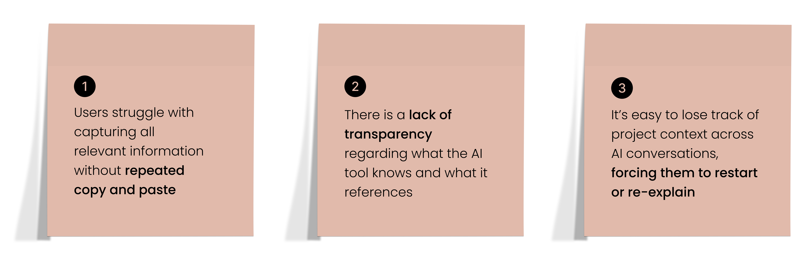
Without effective tools to manage and share context, users face a tedious system that disrupts focus, slows their work, and reduces trust.
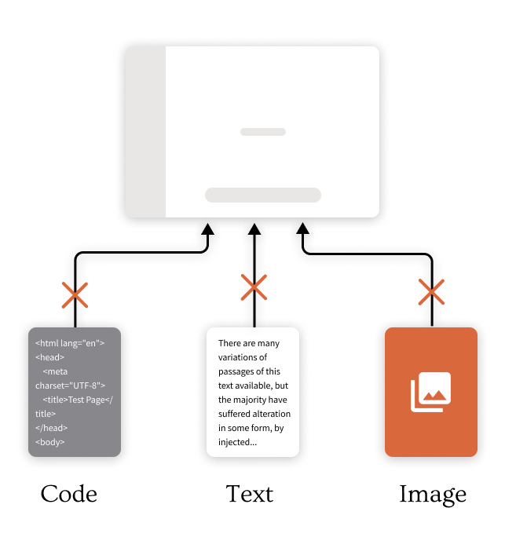
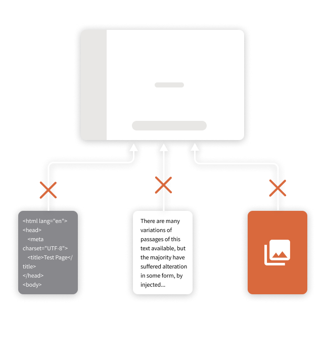
So we started ideating spurred on by a synthesis from our interview notes, and evaluated our ideas across direct and indirect competitors.
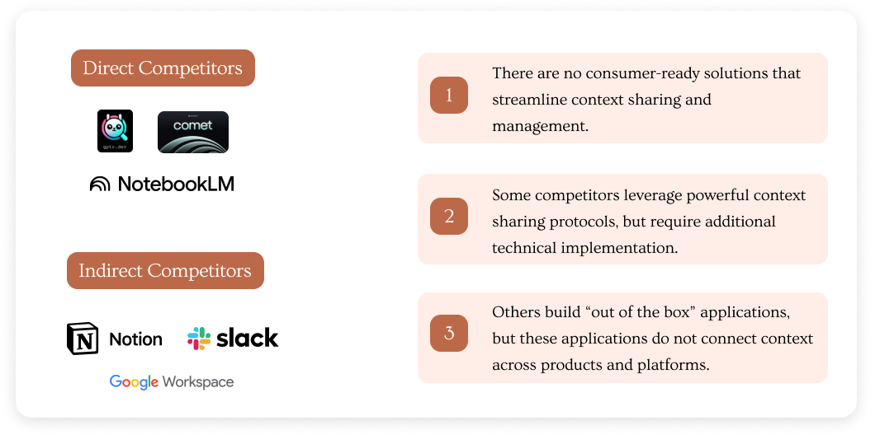
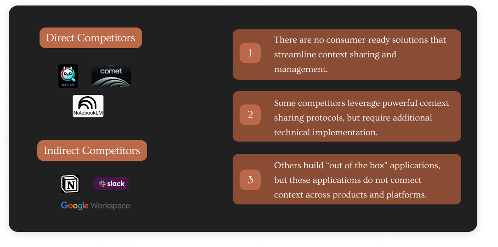
We landed on our top feature ideas, exploring context management through a panel, recommendations across chats, and pulling context through in-line commands. From our brainstorming session, we determined the most delightful prototype for users and the most feasible for implementation.
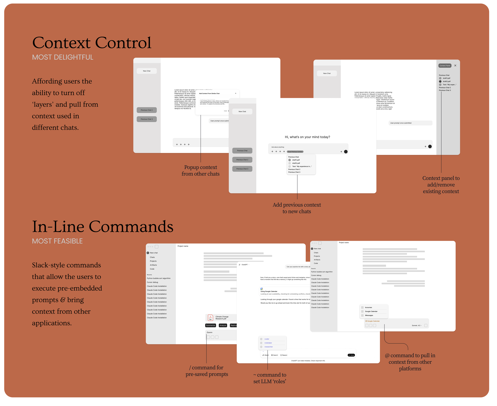
We interviewed 8 graduate university students to further evaluate the efficacy of our features on each prototype, leading them through a series of scenarios.
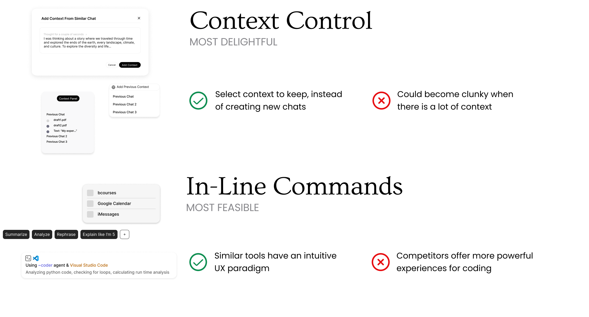
Since users found elements of these prototypes critical in their workflow, we needed to find a way to combine context management and in-line commands together into one seamless experience. The idea was to let users move naturally between organizing their information and taking action, so we mapped out stages to view how users would interact with these features.
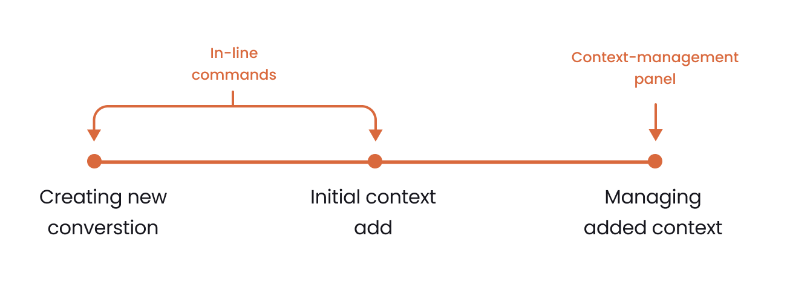
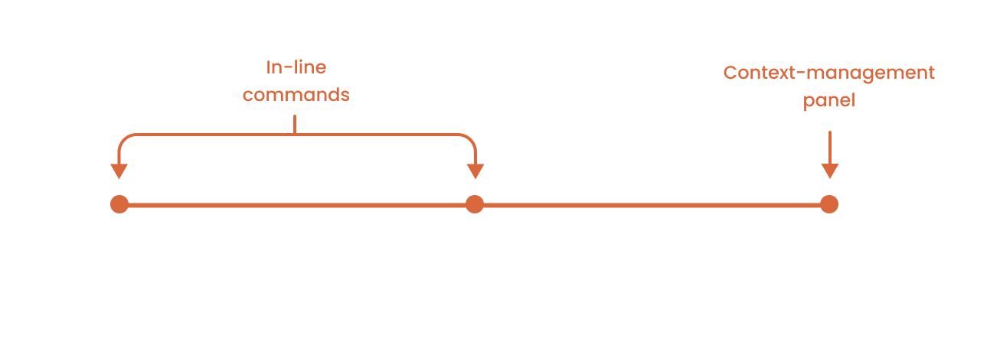
Users need to view context more holistically, with more visual information given about each piece of context.
Design
Collapsible panel where users can turn off context and reset chats while offering another place to import suggested files.
Users repeatedly upload similar context across multiple chats, leading to inefficiency.
Design
A large context import feature that recommends recently used files from relevant projects, reducing cognitive load.
Users frequently reuse similar prompts but have no way to save or template them efficiently.
Design
Saved prompts library where users can store, organize, and quickly access their frequently used prompts.
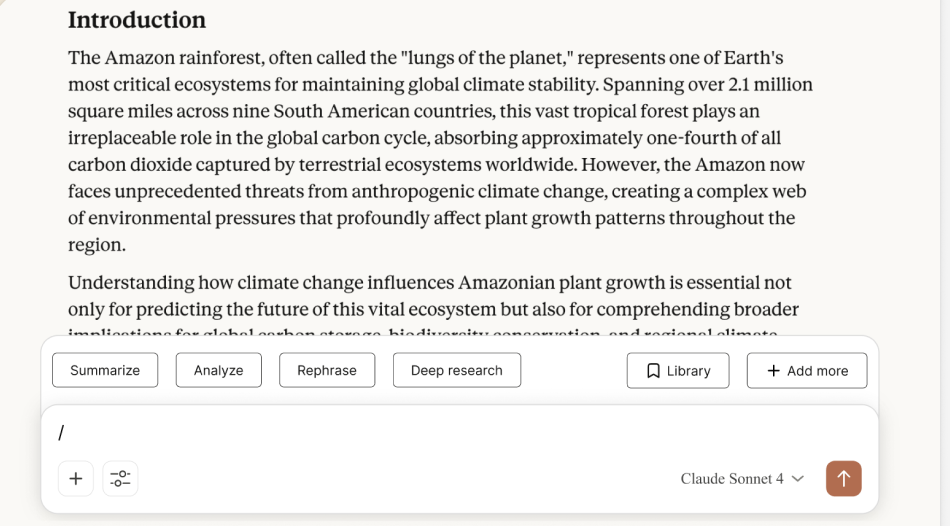
Users need guidance on how to use commands and adopt new methods to manage context.
Design
Contextual tooltips that overview new features that are hidden behind invisible keyboard commands.
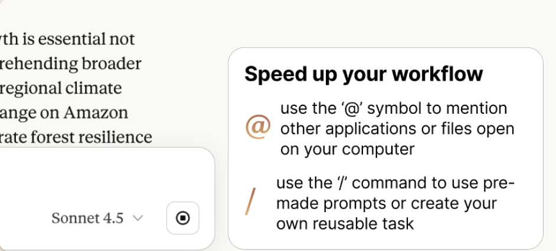
AI tools are rapidly changing and have many open ended use cases, presenting adaptibility challenges to serve users' different needs.
Privacy concerns remains a key consideration when users interact and provide information to AI tools.
Utilizing AI coding tools to implement the features could better simulate real product behavior and receive better feedback.
More prototype testing stages of the process, especially when creating new interaction paradigms.